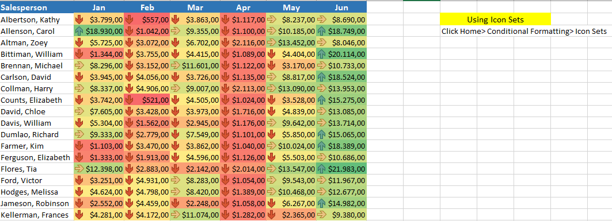

In learning Microsoft Excel, understanding frequently used Excel formulas can facilitate the process of calculating and processing data. Here are some Excel formulas that are often used in the workplace:
The basic formula is applied in the case study of ASEAN GAMES 2021 MEDAL ACQUISITION DATA
- Vlookup
VLOOKUP is an Excel formula that users use to look up the value of one column of data that is set up vertically.

- Hlookup
HLOOKUP is an Excel formula that users use to look up the value of one column of data that is set up horizonly

- Sumif
sumif is used to apply the criteria to one range and sum the corresponding values in a different range

- Sumifs
SUMIFS is a function to sum cells that meet multiple criteria.

- Index
The INDEX function returns a value or the reference to a value from within a table or range

- Match
The MATCH function searches for a specified item in a range of cells, and then returns the relative position of that item in the range

- Index Match
The INDEX MATCH formula is the combination of two functions in Excel: INDEX and MATCH.

- Transpose
The Excel TRANSPOSE function "flips" the orientation of a given range or array: TRANSPOSE flips a vertical range to a horizontal range, and flips a horizontal range to a vertical range
- Countif
COUNTIF is an Excel function to count cells in a range that meet a single condition.

- Countifs
The COUNTIFS function is a premade function in Excel, which counts cells in a range based on one or more true or false condition.

- Max
The MAX function in Excel returns the highest value in a set of data that you specify

- Min
The Excel MIN function returns the smallest numeric value in the data provided.

- Average
to returns the average (arithmetic mean) of the arguments

- STDEV
Standard deviation is used to strategize investing and trading, because it can help you measure market volatility

Split text into different column with functions.

Combine text from two or more cells into one cell
Conditional Formatting Excel is a feature to change the Format Cell
(such as cell color, font, border, etc.) automatically according to the specified criteria.

Data Validation is a feature in Microsoft Excel that serves to limit the values entered into cells
Pivot Table is an excel tool for calculating, summarizing and analyzing data
that allows us to see comparisons, patterns and trends in your data.
Descriptive statistics is all about describing the given data.
How to Show Descriptive Statictics
How to Make Histogram within Table
Regression